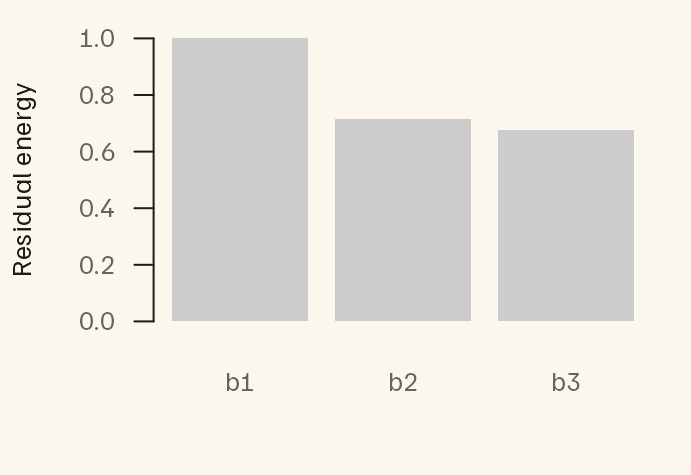

Build ordered image-feature hierarchies
Source:vignettes/feature-hierarchies.Rmd
feature-hierarchies.RmdA network such as VGG-16 processes an image in stages. Early layers respond to edges and textures; later layers respond to object parts and categories. A common analysis extracts features from several of these stages and asks which stage best predicts something you measured, such as brain activity or a behavioural rating.
There is a catch. The stages are not independent descriptions of the image. Each layer is computed from the one before it, so much of what a late layer says is already present, in some form, in the earlier layers. If you give a model the features of every stage, it cannot tell which stage deserves the credit for a prediction.
This vignette shows one way to deal with that. You keep the first stage as it is. For every later stage, you keep only the part that the earlier stages cannot already predict. That new part is called the stage’s innovation. The result is a set of feature blocks, one per stage, that do not overlap, so an effect you find for a stage reflects what that stage adds.
The work has three steps:
- Collect the features of each stage as a matrix, with one row per image.
- Compress each matrix to a few components, because raw network features have thousands of columns.
- Remove the overlap: from each stage, subtract what the earlier stages predict.
A few words are used throughout:
| Term | Meaning |
|---|---|
| Stage | One point in the network where features are read out, such as the end of a VGG block |
| Block | The feature matrix of one stage: one row per image, one column per feature |
| Hierarchy | The stages in order, from earliest to latest |
| Innovation | The part of a stage that earlier stages cannot predict with a linear model |
What do the inputs look like?
The input is a named list of matrices, one per stage. Every matrix
has the same rows in the same order, because row i
describes the same image in every stage. The matrices may have different
numbers of columns.
To keep this vignette fast and free of Python, the blocks here are
simulated. Think of 120 frames of a movie described at three stages,
b1, b2 and b3, with 18 features
each. The simulation builds in the overlap described above:
- A shared signal, two slow waves, is present in all
three stages. It is strongest in
b1and weaker in the later stages. - Each stage also has a signal of its own that no other stage has.
- A little noise is added to every feature.
In a real analysis the blocks would be VGG activations after spatial
pooling (see vignette("spatial-pooling")). The last section
shows how to get them.
set.seed(1)
n <- 120
t <- seq_len(n) / n
shared <- cbind(sin(2 * pi * t), cos(2 * pi * t))
stage <- function(scale, p, noise) {
unique <- matrix(rnorm(n * 2), n, 2)
cbind(scale * shared, unique) %*% matrix(rnorm(4 * p), 4, p) +
matrix(rnorm(n * p, sd = noise), n, p)
}
blocks <- list(
b1 = stage(1.0, 18, 0.15),
b2 = stage(0.8, 18, 0.15),
b3 = stage(0.5, 18, 0.15)
)How do you remove the overlap?
You describe the three steps in a recipe, fit the recipe to your blocks, and then apply the fit. The recipe below says:
-
order: the stages, from earliest to latest. This order decides who is “earlier” when overlap is removed. -
compress: reduce each stage to its 8 leading principal components.score_weighting = "whitened"gives every component the same variance, so no stage dominates because of its scale. -
decomposition:ordered_innovation()asks for the overlap to be removed. From each stage it subtracts the best linear prediction from all earlier stages. -
name_prefix: a label added to the output names.
recipe <- hierarchy_recipe(
order = c("b1", "b2", "b3"),
compress = block_pca(rank = 8, score_weighting = "whitened"),
decomposition = ordered_innovation(method = "svd"),
name_prefix = "vgg"
)
fit <- fit_hierarchy_transform(recipe, blocks)
features <- predict(fit, blocks)Fitting and applying are separate steps, as with any model in R.
fit_hierarchy_transform() learns the compression and the
predictions from the rows you give it. predict() applies
what was learned, here to the same rows.
The output is again a named list of matrices, one per stage, each with 8 columns:
names(features)
#> [1] "vgg_b1" "vgg_b2_innovation" "vgg_b3_innovation"
vapply(features, ncol, integer(1))
#> vgg_b1 vgg_b2_innovation vgg_b3_innovation
#> 8 8 8vgg_b1 holds the compressed first stage, unchanged.
vgg_b2_innovation holds what b2 adds beyond
b1. vgg_b3_innovation holds what
b3 adds beyond b1 and b2
together. These are the blocks you would give to a regression or
encoding model.
Did it work?
hierarchy_diagnostics() answers two questions about a
fit.
How much of each stage was repeated information?
diag <- hierarchy_diagnostics(fit, blocks)
diag$innovation[, c("stage", "residual_energy", "fraction_predictable")]
#> stage residual_energy fraction_predictable
#> 1 b1 1.0000000 0.0000000
#> 2 b2 0.7155572 0.2844428
#> 3 b3 0.6746763 0.3253237fraction_predictable is the share of a stage that the
earlier stages could predict, and that was therefore removed.
residual_energy is the share that is left; the two add to
1. Here about 28% of b2 could be predicted from
b1, and about 33% of b3 from b1
and b2. That is the shared signal built into the
simulation. The first stage has nothing before it, so nothing is
removed.
Do the output blocks still overlap?
Linear CKA measures how similar two feature blocks are. It is 0 when one block tells you nothing, linearly, about the other, and 1 when they carry the same information.
round(diag$pairwise_cka, 3)
#> b1 b2 b3
#> b1 1 0 0
#> b2 0 1 0
#> b3 0 0 1Every pair of output blocks has a CKA of 0. On the rows used for fitting, the overlap is gone exactly.
The plot shows residual energy for each stage. A short bar would mean that a stage mostly repeated what earlier stages already said. A bar near 1 means that almost everything in the stage is new.


Can you apply the fit to new images?
Usually you fit on one set of images and apply the result to another:
a training and a test set, or two halves of a movie. The fit stores
everything it learned, so predict() can transform rows it
has never seen.
Below, the fit uses the first 60 frames and is then applied to the last 60.
train <- subset_feature_blocks(blocks, 1:60)
test <- subset_feature_blocks(blocks, 61:120)
fit_half <- fit_hierarchy_transform(recipe, train)
test_features <- predict(fit_half, test)
invariance <- check_transform_invariance(fit_half, test)An important property is that each row is transformed on its own. The
features of a test image depend only on that image and on the stored
fit, not on which other test images happen to be transformed with it.
check_transform_invariance() confirms this in two ways:
transforming a subset of rows gives the same values as transforming all
of them, and shuffling the rows only shuffles the output.
invariance[c("batch_invariant", "permutation_equivariant")]
#> $batch_invariant
#> [1] TRUE
#>
#> $permutation_equivariant
#> [1] TRUEOn new rows the overlap is no longer exactly zero, because the
predictions were learned from other rows. Pass the new rows as
heldout to see how much overlap comes back.
held <- hierarchy_diagnostics(fit_half, train, heldout = test)
round(held$heldout$pairwise_cka, 3)
#> b1 b2 b3
#> b1 1.000 0.235 0.239
#> b2 0.235 1.000 0.127
#> b3 0.239 0.127 1.000To read these numbers you need a reference point. Two unrelated
blocks of this size (60 rows, 8 columns) do not give a CKA of 0; by
chance alone they give about 0.12. So b2 and
b3 are at chance level here, and b1 shows a
little remaining overlap with the later stages. A value that climbs
toward 1 would mean the fit does not carry over to the new rows, usually
because it was trained on too few.
How do you get blocks from real images?
Everything above works on any named list of matrices. To get that
list from real images, imfeatures runs VGG-16 for you.
vgg16_block_end_spec() describes which layers to read:
the end of each of the five convolutional blocks, the first dense layer,
and the classifier output. It also says how to reduce each layer’s maps
over space; vignette("spatial-pooling") explains those
options. extract_feature_hierarchy() then returns one block
per stage, with one row per image, ready for the same recipe.
This chunk needs Keras and the VGG-16 weights, so it is not run here.
spec <- vgg16_block_end_spec()
raw <- extract_feature_hierarchy(image_paths, spec = spec)
fit <- fit_hierarchy_transform(recipe, raw)If your images are movie frames and you are modelling fMRI, align the blocks to the scans (for example by convolving with a haemodynamic response) before fitting. That step is outside this package.
Older code may call residualize_tiers(). It still works
and uses the same method.
Next steps
-
?hierarchy_recipeand?fit_hierarchy_transformfor the compression and overlap-removal options -
vignette("spatial-pooling")and?vgg16_block_end_specfor the VGG-16 layers and how their maps are pooled -
?hierarchy_diagnosticsfor checks you can run on the features alone, before any brain or behavioural data are involved